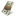

<ion-header>
  <ion-toolbar>
    <ion-title>Gambles</ion-title>
    <ion-buttons end>
      <button ion-button icon-only color="royal" (click)="overview()">
        <ion-icon name="podium"></ion-icon>
      </button>
    </ion-buttons>
    <ion-buttons end>
      <button ion-button icon-only color="royal" (click)="logOut()">
        <ion-icon name="md-log-out"></ion-icon>
      </button>
    </ion-buttons>
  </ion-toolbar>
  <ion-toolbar no-border-top>
    <ion-segment [(ngModel)]="gambleSelect" color="light">
      <ion-segment-button value="mygambles" (click)="showMyOpenGambles()">
        My Open Gambles
      </ion-segment-button>
      <ion-segment-button value="stats" (click)="showMyClosedGambles()">
        My Closed Gambles
      </ion-segment-button>
    </ion-segment>
  </ion-toolbar>
</ion-header>

<ion-content padding>
  <ion-list>
    <ion-item (press)="removeItem(item)" class="text" *ngFor="let item of specials.concat(totos)" (click)="goToItem(item)">
      <ion-avatar item-left>
        
        
      </ion-avatar>
      <h2>{{item.name}}</h2>
      <h3>{{item.startDate | amDateFormat:'ddd DD-MM-YYYY'}}   {{item.endDate | amDateFormat:'ddd DD-MM-YYYY'}}</h3>
      <p><ion-icon name='close' item-left style="color: #55acee"></ion-icon> {{item.closedForGamble | amDateFormat:'ddd DD-MM-YYYY HH:mm:ss'}}</p>
      <p><ion-icon name='logo-euro' style="font-size: 12px;"></ion-icon> {{item.pot}}</p>
      <ion-icon *ngIf="currentDate > item.closedForGamble" name='close-circle' item-right style="color: darkgrey"></ion-icon>
      <ion-icon *ngIf="currentDate < item.closedForGamble" name='checkmark-circle' item-right style="color: #7CBD26"></ion-icon>
    </ion-item>
  </ion-list>
    <ion-fab right bottom *ngIf="role == 'admin'" >
    <button ion-fab color="danger"><ion-icon name="add"></ion-icon></button>
    <ion-fab-list side="left">
      <button ion-fab (click)="addToto(item)"></button>
      <button ion-fab (click)="addSpecial(item)"></button>
    </ion-fab-list>
  </ion-fab>
</ion-content>
